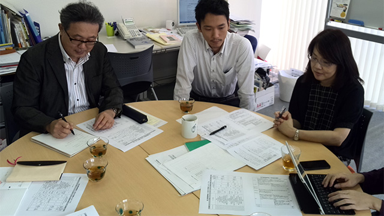
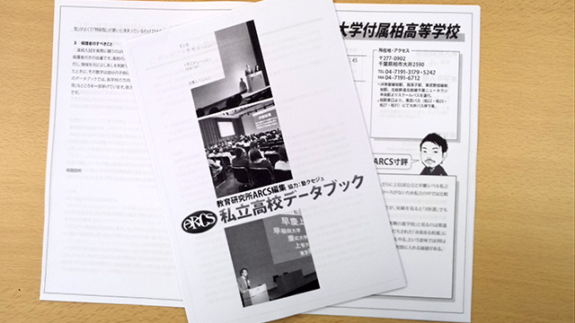

進捗レポ。
今週月曜日、研究所の会議がある日です。
前回のブログを書いてからもう一週間か…最近は時間の流れが速い。
この日は私立高校説明会の全体の流れを確認です。

所長を始め、HP支配人たちも真剣な表情ですね。
研究所のスタッフはもちろん、塾のスタッフの力も大いに借りてやっと成立する大きな会ですから、役割分担などを細かく決めておかなければなりません。
特に庄本氏などは前に出てプレゼンしたりトークする場面が頻繁に多いので大変ですね。
おっと、そういえば庄本氏がこの私立高校説明会のためのお土産として作成していたオリジナルの「データブック」が出来上がりました！

一校に対する情報は極力最小限に抑えていますが、‘ARCS寸評’というコメント欄が見どころです。
一般的な学校案内に記載されているような当たり障りのないコメントではなく、独自の調査で得た学校の実情を端的に表現していて、とても参考になる仕上がりになっています。
このお土産をゲットできるのもARCS主催の私立高校説明会だけ！（笑）
ということで、参加ご希望の方はどしどしお問い合わせ下さい。
夜にはインタビューも
この日は小学生の授業が終わってから、こまごまとしたテスト作成や自分の仕事をし、ほぼ業務終了。
しかし、最後に大切な仕事が。
夜10時半に高校部に在籍している生徒にインタビューをする約束をしていたのです。
先週のブログ（迫る私立高校説明会、準備レポ）でレポートした駒込高校に通う生徒（高３）です。
あまりに詳細を述べると私立高校説明会前のネタばれになってしまうため、伏せておきますが、その生徒はかなり高校に満足しているようです。
もう11時を回ったので話を切り上げたのですが、なかなか彼は帰ろうとせず、とにかく高校の思い出を語るのです。
彼の話とこちらが実際に学校の授業や生徒・教師を見て感じたこと、校長先生の話とそれに対する鋭い質問…けっこうイメージがわいてきましたね。
ちなみにその生徒曰く、先週のブログで紹介した通学路の生パスタ屋さん、生徒同士で行っても構わないとのこと。
いいなぁ～！ 私なら毎日行きますね（笑）。